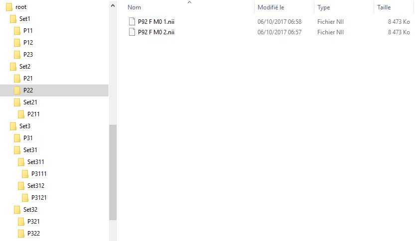

USER MANUAL
Welcome to the user manual for the BrainMapper software.
Welcome to the user manual for the BrainMapper software.
A workspace is a folder (for example named 'root') containing all data (sets, sub sets and image collections).

To import your workspace, you have to respect the structure shown in the previous section. Select the button "Workspace" in the menu. Then click on "Import from workspace".
Then, choose a directory. This directory will be the root of your workspace. That mean all the data (sets, and image collections) will be in it, directly. For an example, see the previous section image.
To avoid any loss of data, a check will be made. If an error occurs, your workspace does not meet one of the following prerequisites:
To export your workspace, select the button "Workspace" in the menu. Then click on "Export workspace". Then, select a directory where the workspace will be saved.
Note : this operation will save all the NIfTI files on your computer. Please check that you have enough space on your computer before this operation, to prevent any damage.
One you saved your workspace, you can exit the software. You will be able to import it again later, in another instance of the software. If you reimport it in the same instance, then you will have an error. That's because all your data is already in the software (and name the same way), even if you changed some things in it.
We recommand to save your work when your done. And load your workspace when you come back at it, with another instance of the software.
To export your selcted image Collection, select the button "Export data" in the main page of the software. This operation let you choose between the export to NifTI and the export to CSV. The pop-up shown remember you the number of image collection and NifTI image selected.
After this step, to export as a NifTI file, select the button "Export to NIfTI" and click "Apply". This operation let you choose where you want to save these files.
To take less place on the computer, NIfTI images are compressed ("nii.gz").
Note : this operation will save all the NIfTI files on your computer. Please check that you have enough space on your computer before this operation, to prevent any damage.
After this step, to export as a CSV file, select the button "Export to CSV" and click to "Apply". An other pop-up will appear. This let you choose between "Export all points" (all the points with an intensity other than 0) and "Export only the centroid of each file". After choosing your export way, click on the "Apply" button and choose where you want to save the CSV file.
The first line of the CSV contains the header of each column. These are :
Note : the software use the use the mni 152 coordinate system. Thus we use "mni_icbm152_t1_tal_nlin_asym_09a" as template. You can find all the mni template at link.
Only "File_Name_NIfTI", "Point_Name", "X", "Y", "Z" and "Intensity" are auto-implemented by the software. The others columns are here to add medical informations.